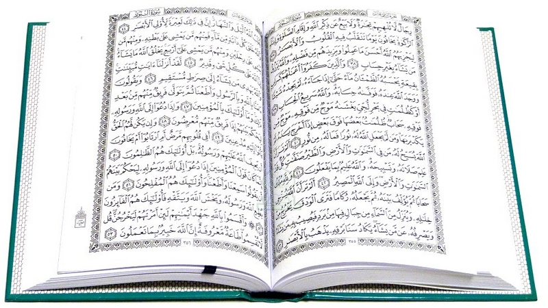

يعتبر علم جلب الحبيب إحدى معجزات الروحانية العظمى، شخصان أحيانا غريبان تماما، يلتقيان، وفجأة يرى أحدهما أو كلاهما بالآخر شخصا مثاليا وبالغا حد الكمال. وفجأة ينغمر أحدهما بالآخر ويغرق به ويتلاشى كل شيء آخر. يقتنعان أنه بدون الآخر حياتهما ليست بحياة، وأنه بدونه لا سعادة بحياته. هكذا هي الروح من أصل طبيعتها الربانية تعشق وتبحث عن الحب، تبحث عن رفيق أو رفيقة للحياة. نعشق هذا الحبيب ونعتبره مثاليا لأننا نؤمن أنه عندما يرانا هو بدوره رائعين إلى هذه الدرجة سنشعر بالكمال. ولكن بسبب ماغاب عن الإدرك، فجأة تلتبست العلاقات وبدلا من الحب المتبادل إلى ما لا نهاية، ينقلب الأمر لكرٍّ وفرٍّ فلا روح إرتاحة و لا قلب فرح، غالبا ماينتج عن ذلك فراغ كبير بقلب، فراغ يتعاظم مع الوقت ومع كل عشق لحبيب جديد. بفضل الله تعالى منبع عالمنا ومن أجل أسمى غايات الحب، مَنَّ الله تعالى على فضيلة الشيخ الروحاني ابو الحبيب الزهداني من طرق جلب الحبيب وتسريع النصيب و زواج العانس و رد المطلقة و إرجاع الحبيب وتقوية وتعظيم الحب بين الزوجين.
قواعد السحر الأبيض العلوي العثماني لتيسير الزواج وزرع المحبة. أسرار السحر الأسود الدنوي اليهودي والبابلي والفرعوني للجلب والجدب والطاعة والتهيج. أصول السحر الأحمر والسحر الأسود المغربي لزواج العانس، إمتلاك القلب وسلب عقل الحبيب.
للطلب اتصلوا بنا على الرقم : 380930252029+ او من خلال الواتس اب
مكّن الله عز وجل سماحة الشيخ الروحاني ابو الحبيب الزهداتي من أعمال جلب الحبيب عبر طرق الجذب وإستمالت قلب شخص معين لشخص آخر. ومن هذه الطرق ما يطلق عليه سحر المحبة وسحر العطف وسحر جلب الحبيب. يقوم الشيخ الروحاني ابو الحبيب من خلال هذه الأعمال بِ:
جلب الحبيب أو الحبيبة وتهييج الزوج والزوجة والحبيب ♥للطلب اتصلوا بنا على الرقم : 380930252029+ او من خلال الواتس اب على نفس الرقم
تسخير الزوج لمحبة زوجته وطاعتها ♥
تزويج العانس وجلب الخطاب ورد المطلقة ♥

السحر من الكبائر والموبقات السبع لما فيه من ضرر على الناس وتفريق بينهم وتعطيل لأمورهم، لكن هناك أشخاص لايخافون الله و يتعاملون به ، حيث يقومون بأعمال لجلب الجن وإستحضاره وأمره بفعل أمور تضر الناس، إن بركة الشيخ الروحاني ابو الحبيب الزهداني التي منّ بها الله عليه تمكنه من فك السحر الأبيض و علاج السحر الاسود وكذلك رفع ضررهما وتأثيرهما على صحة المسحور.
للطلب اتصلوا بنا على الرقم : 380930252029+ او من خلال الواتس اب على نفس الرقم
السحر من الكبائر والموبقات السبع لما فيه من ضرر على الناس وتفريق بينهم وتعطيل لأمورهم، لكن هناك أشخاص لايخافون الله و يتعاملون به ، حيث يقومون بأعمال لجلب الجن وإستحضاره وأمره بفعل أمور تضر الناس، إن بركة الشيخ الروحاني ابو الحبيب الزهداني التي منّ بها الله عليه تمكنه من فك السحر الأبيض و علاج السحر الاسود وكذلك رفع ضررهما وتأثيرهما على صحة المسحور.
للطلب اتصلوا بنا على الرقم : 380930252029+ او من خلال الواتس اب على نفس الرقم